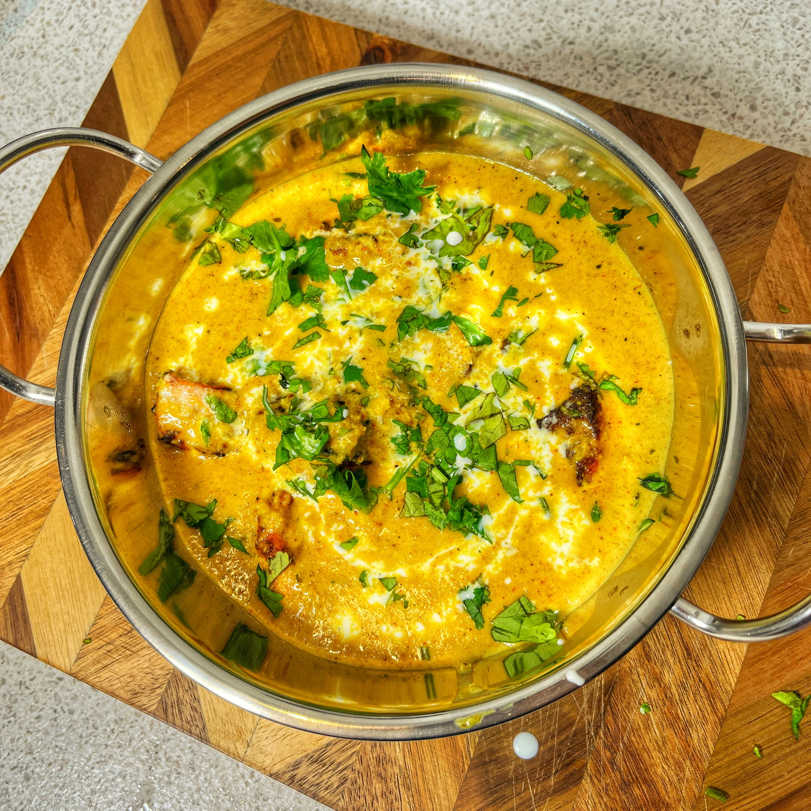

Chicken Korma
HOME

Description
This korma recipe is all cooked in one pan with no marinading required and it’s ready in less than 30 minutes
Ingredients
- 2 tbsp ghee or sunflower oil
- 1 onion peeled and finely chopped
- 3 chicken breasts (approx. 525g/1.1lbs), chopped into bite-size chunks
- 2 cloves garlic peeled and minced
- 2 tsp minced ginger
- 1 tsp ground cumin
- 1 ½ tsp ground coriander
- 1 ½ tsp garam masala
- ½ tsp mild chilli powder (this is to add a tiny bit of warmth, but you can leave it out if you prefer no heat at all).
- ½ tsp turmeric
- ¼ tsp salt
- ¼ tsp white pepper
- 2 tbsp tomato puree paste for US
- 120 ml (½ cup) full-fat plain/natural yogurt
- 120 ml (½ cup) coconut cream *see note
- 2 tbsp ground almonds
- 1 tbsp sugar
- 60 ml (4 tbsp) double (heavy) cream
Steps
- Heat the ghee in a large frying pan over a medium heat, until hot.
- Add the onion and cook for 5 minutes, stirring often, until softened.
- Add the chicken breasts and cook for 5 minutes, stirring occasionally, until the chicken is sealed.
- Add the minced garlic, minced ginger, cumin, ground coriander, garam masala, chilli powder, turmeric, salt, white pepper, and tomato puree.
- Cook for 2 minutes, stirring, until the chicken is coated.
- Add the yogurt, coconut cream, ground almonds, and sugar.
- Stir everything together, bring to a gentle boil, then simmer for 6-8 minutes, until the chicken is cooked through.
- Stir in the double (heavy) cream and turn off the heat.
- Serve the korma topped with fresh coriander (cilantro).
- Serve with rice and/or chapati.